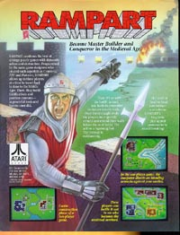
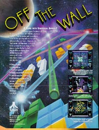
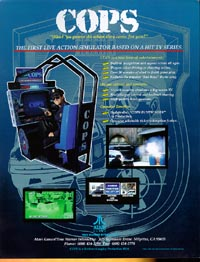
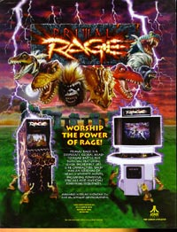

1990
This
was a fast paced coin-op strategy game. Break down your opponents
defenses, storm the castle and claim victory. Rampart was a
unique and highly involved arcade game from Atari Games Corp.
1990
1991
Off
The Wall was interesting in that you could relate to the game as being
a 1991 souped-up version of Super Breakout. The game was simple,
challenging and a lot of fun. Colorful backgrounds and some
really funky rebound sounds made for a very good game.
1991
Cops,
Atari Games first person police simulator. Did you ever
want to be put into one of those Police simulators to see how good or bad
you'd do in a situation. Well, here is your chance.
You take on a first person view and have to aim and shoot at suspects without
shooting innocent bystanders and victims. If you really got
into the game and started to hit the higher levels this was one heart pounding
game!
1994
